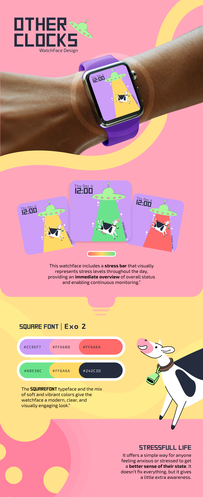

OtherClocks
WatchFace Design
Sobre o Projeto
Projeto de watchface focado na visualização de níveis de stress, utilizando ilustração e cor para comunicar informação de forma clara e acessível. A watchface inclui uma barra de stress que representa visualmente os níveis ao longo do dia, oferecendo uma visão imediata do estado geral.
